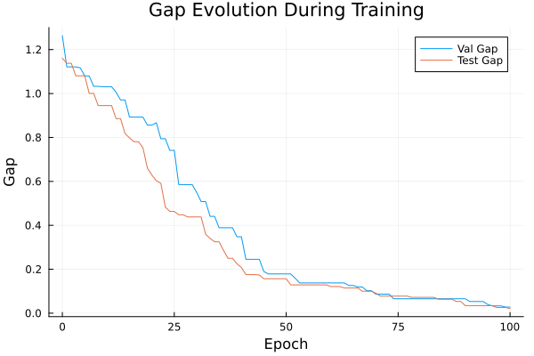
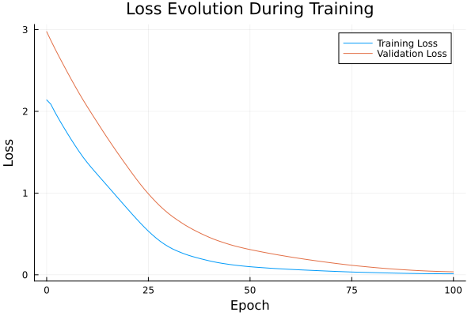

Basic Tutorial: Training with FYL on Argmax Benchmark
This tutorial demonstrates the basic workflow for training a policy using the Perturbed Fenchel-Young Loss algorithm.
Setup
using DecisionFocusedLearningAlgorithms
using DecisionFocusedLearningBenchmarks
using MLUtils: splitobs
using PlotsCreate Benchmark and Data
b = ArgmaxBenchmark()
dataset = generate_dataset(b, 100)
train_data, val_data, test_data = splitobs(dataset; at=(0.3, 0.3, 0.4))(DecisionFocusedLearningBenchmarks.Utils.DataSample{@NamedTuple{}, @NamedTuple{}, Matrix{Float32}, Vector{Float32}, Vector{Float32}}[DataSample(x=Float32[-1.30771 -0.0673111 … -1.19648 -0.656182; 0.223371 0.136708 … 0.178603 -1.45636; … ; -0.188735 -1.59636 … 0.482105 -0.239249; -2.53723 0.287661 … -0.62992 -0.495303], θ=Float32[-2.38089, 0.196465, -1.55964, 0.0258892, -0.430808, -0.283214, 3.03659, -0.070526, -1.03645, -0.316629], y=Float32[0.0, 0.0, 0.0, 0.0, 0.0, 0.0, 1.0, 0.0, 0.0, 0.0]), DataSample(x=Float32[-0.5136 -0.621201 … 0.755555 -0.253669; -0.243433 2.9578 … -0.900612 -0.0271262; … ; 0.990684 -0.10743 … -0.265183 -0.60022; -0.736357 1.5087 … -0.932601 0.404191], θ=Float32[-0.306276, -0.988485, -0.248795, -1.46386, 0.543413, 0.00342201, 0.892306, -1.77389, 0.806922, 0.132865], y=Float32[0.0, 0.0, 0.0, 0.0, 0.0, 0.0, 1.0, 0.0, 0.0, 0.0]), DataSample(x=Float32[0.607 -0.0119642 … -0.304885 1.06199; -0.757797 0.565525 … -0.612529 0.871476; … ; -0.204282 -0.315259 … 1.01588 0.174185; -0.586444 0.625009 … -1.30303 -0.619669], θ=Float32[0.493916, 0.326825, -0.342718, -0.299453, -0.364565, -2.69002, 0.40303, -0.261757, -0.657374, 0.302767], y=Float32[1.0, 0.0, 0.0, 0.0, 0.0, 0.0, 0.0, 0.0, 0.0, 0.0]), DataSample(x=Float32[-0.181621 0.965327 … 0.0400273 0.339186; 1.10119 -1.01019 … -1.18115 -0.968327; … ; -1.43012 -1.28983 … 0.883858 1.06015; -1.27971 0.553348 … 1.34844 -2.68862], θ=Float32[-1.5432, 1.71905, 0.170113, -0.740965, -0.959166, -0.760644, 0.766599, 1.2966, 1.67874, -0.119002], y=Float32[0.0, 1.0, 0.0, 0.0, 0.0, 0.0, 0.0, 0.0, 0.0, 0.0]), DataSample(x=Float32[-0.898689 0.885495 … 0.293622 0.470026; -1.79657 0.78574 … -0.860738 -0.196636; … ; 0.424707 0.716998 … -1.00597 0.368369; -1.06999 0.299582 … -0.831246 1.83929], θ=Float32[-0.625395, 0.564685, 1.31141, -0.263886, -0.497941, -0.857077, 0.233566, 0.171171, 0.0674755, 1.29503], y=Float32[0.0, 0.0, 1.0, 0.0, 0.0, 0.0, 0.0, 0.0, 0.0, 0.0]), DataSample(x=Float32[1.58496 0.44308 … 0.570978 -0.298429; 0.4628 0.0323049 … 0.132953 -0.0725275; … ; -0.487199 0.558995 … -0.667673 -0.554617; 0.176979 0.531304 … -0.624218 0.815037], θ=Float32[1.40734, 1.05818, 0.280974, -0.0650299, -0.458062, -1.49608, -1.61788, 0.715779, 0.278165, 0.181593], y=Float32[1.0, 0.0, 0.0, 0.0, 0.0, 0.0, 0.0, 0.0, 0.0, 0.0]), DataSample(x=Float32[0.634533 -0.16978 … -1.19126 1.06738; 0.379566 -0.316882 … 1.60549 0.921944; … ; 1.85537 -0.31156 … -0.369335 0.929716; -0.0713941 -0.378724 … -1.74705 1.86629], θ=Float32[0.650132, -0.31456, -1.15783, -0.997614, -2.37703, -1.21562, -0.373124, -1.99011, -2.17387, 2.1821], y=Float32[0.0, 0.0, 0.0, 0.0, 0.0, 0.0, 0.0, 0.0, 0.0, 1.0]), DataSample(x=Float32[2.59464 -0.834654 … 0.776401 2.21737; -1.10431 0.829371 … 0.80221 -0.189664; … ; -1.19981 -0.262121 … -0.0553589 2.49813; 0.00198672 0.160731 … -0.359149 -1.07053], θ=Float32[2.95529, -1.17807, -1.71052, 0.702741, 1.01864, 2.73866, -2.37133, 2.55451, -0.16204, 2.13414], y=Float32[1.0, 0.0, 0.0, 0.0, 0.0, 0.0, 0.0, 0.0, 0.0, 0.0]), DataSample(x=Float32[-0.70988 1.54886 … 0.48417 0.627092; 1.11009 -0.446516 … 2.7717 -0.308491; … ; 0.93353 1.07909 … -0.85698 2.1322; -0.439984 0.517587 … 0.41081 1.43616], θ=Float32[-0.78015, 2.56387, 0.425353, -1.86164, -2.36914, 1.03703, 0.729705, 1.01906, 0.00690944, 1.50931], y=Float32[0.0, 1.0, 0.0, 0.0, 0.0, 0.0, 0.0, 0.0, 0.0, 0.0]), DataSample(x=Float32[-0.217208 1.23739 … -1.83826 -1.36888; -0.167545 0.572609 … -0.727347 0.431616; … ; -0.205056 -1.99024 … -1.75949 0.0103203; -0.388902 -1.45992 … -0.842055 0.775967], θ=Float32[-0.410477, -0.344717, 0.321574, 1.49132, 2.13258, 0.11414, 1.26963, 1.42466, -2.11216, -1.07071], y=Float32[0.0, 0.0, 0.0, 0.0, 1.0, 0.0, 0.0, 0.0, 0.0, 0.0]) … DataSample(x=Float32[-1.00996 0.130738 … 2.14632 -1.48618; -1.40887 0.300615 … -0.516296 -0.390216; … ; -0.266627 -1.54706 … -0.128445 -0.340101; 0.686016 -1.07394 … 0.387969 -0.414917], θ=Float32[-0.468693, -0.854027, -0.641684, -0.350646, -1.38723, -0.664289, 0.464053, 0.46868, 2.15705, -0.848129], y=Float32[0.0, 0.0, 0.0, 0.0, 0.0, 0.0, 0.0, 0.0, 1.0, 0.0]), DataSample(x=Float32[-1.03469 1.61352 … -1.39941 -0.436574; 1.47284 0.49899 … 0.121914 -0.669168; … ; -1.10601 1.06309 … -0.837416 -0.00472078; -0.45415 0.0843857 … 0.218997 -1.09827], θ=Float32[-2.16445, 1.30967, 1.84042, 0.563768, 1.34474, -1.23327, 1.4444, 0.830236, -1.31504, -0.392389], y=Float32[0.0, 0.0, 1.0, 0.0, 0.0, 0.0, 0.0, 0.0, 0.0, 0.0]), DataSample(x=Float32[-0.765688 0.345205 … 0.449901 -0.702601; -1.0063 0.631698 … -0.260938 -0.144009; … ; -0.567714 0.488899 … 1.5624 -1.66217; 1.05043 0.867026 … -0.590181 1.32042], θ=Float32[-0.164668, 0.498298, -0.401843, -0.333776, 1.05733, -1.3586, -0.424287, -1.2071, 0.358028, -0.812849], y=Float32[0.0, 0.0, 0.0, 0.0, 1.0, 0.0, 0.0, 0.0, 0.0, 0.0]), DataSample(x=Float32[0.494661 0.731648 … -1.61891 -0.484083; 0.137981 0.380769 … 0.170331 -0.0743653; … ; 0.279678 0.572004 … 2.57633 0.0292623; 1.00143 -0.0361581 … -0.414588 0.817181], θ=Float32[0.266909, 0.483401, 0.667875, 1.42994, 0.511888, -0.0890021, -0.189359, 2.69108, -1.47087, -0.434108], y=Float32[0.0, 0.0, 0.0, 0.0, 0.0, 0.0, 0.0, 1.0, 0.0, 0.0]), DataSample(x=Float32[0.845986 0.267292 … -2.16906 -0.152343; -0.694654 -0.67717 … 0.340753 -0.929211; … ; 0.742647 -0.148075 … -0.616493 -0.681257; 0.143183 -1.99231 … 0.221661 0.532549], θ=Float32[1.49472, -0.882142, -0.109954, -0.273251, -0.569029, 2.29436, -1.97902, -1.01016, -2.0627, 0.333224], y=Float32[0.0, 0.0, 0.0, 0.0, 0.0, 1.0, 0.0, 0.0, 0.0, 0.0]), DataSample(x=Float32[0.978957 0.038746 … -1.1974 1.30727; -1.83016 0.864339 … -0.56126 0.500947; … ; 0.193147 0.252156 … -0.481576 1.42847; -0.656038 -1.83048 … 1.81227 -1.14472], θ=Float32[1.62269, -0.885343, -0.370059, -0.986054, 0.926174, -2.16514, -0.530811, 2.0581, 0.0720954, 0.997456], y=Float32[0.0, 0.0, 0.0, 0.0, 0.0, 0.0, 0.0, 1.0, 0.0, 0.0]), DataSample(x=Float32[0.139297 0.753107 … 0.61331 -0.257989; -1.57113 0.14389 … -0.437526 0.841327; … ; -0.948777 -1.37286 … -1.67981 0.756787; -0.537225 0.68097 … 0.286539 0.0200028], θ=Float32[0.405602, 1.13158, 1.93697, 0.456314, 0.872158, 1.17654, -2.48782, -0.579595, 0.221791, -0.191788], y=Float32[0.0, 0.0, 1.0, 0.0, 0.0, 0.0, 0.0, 0.0, 0.0, 0.0]), DataSample(x=Float32[-0.312283 0.602445 … -0.112559 -1.21185; -0.122679 0.130919 … -0.721218 -1.47739; … ; 0.267184 0.167685 … -0.170922 -2.18981; 0.210736 -0.663747 … 0.149567 -1.16497], θ=Float32[0.0249802, 0.332804, -0.199202, -2.29676, 0.755339, -1.02899, -0.399078, -0.263927, 0.444766, -1.57714], y=Float32[0.0, 0.0, 0.0, 0.0, 1.0, 0.0, 0.0, 0.0, 0.0, 0.0]), DataSample(x=Float32[-0.883163 -0.731011 … 1.8509 -1.48256; -0.54017 1.08992 … -0.274936 1.52309; … ; -0.651087 0.2409 … -0.304743 -0.280728; 0.861569 -1.71552 … -0.313968 -0.616491], θ=Float32[-0.424995, -1.65065, 3.0653, 0.243779, -1.2758, 3.24216, -0.635071, 0.185854, 1.52988, -2.51851], y=Float32[0.0, 0.0, 0.0, 0.0, 0.0, 1.0, 0.0, 0.0, 0.0, 0.0]), DataSample(x=Float32[1.08799 -1.44072 … -0.824632 -0.608914; -2.13611 0.402636 … -0.368308 1.0403; … ; -1.43263 -0.524814 … -0.869893 0.84574; 1.77146 -1.37881 … -0.456875 -0.520039], θ=Float32[2.16585, -2.41625, -0.324811, -3.03068, 0.989645, 0.851349, 0.0369124, -1.80403, -1.22677, -1.06996], y=Float32[1.0, 0.0, 0.0, 0.0, 0.0, 0.0, 0.0, 0.0, 0.0, 0.0])], DecisionFocusedLearningBenchmarks.Utils.DataSample{@NamedTuple{}, @NamedTuple{}, Matrix{Float32}, Vector{Float32}, Vector{Float32}}[DataSample(x=Float32[-0.835164 -0.459412 … -1.01255 -0.332917; -1.92217 -1.5902 … 0.929824 -0.951787; … ; -0.313886 -0.839113 … -0.422716 0.245072; -0.900556 -0.298047 … -0.565035 -1.73599], θ=Float32[-0.730177, -0.390267, -0.263775, -1.9383, 0.83601, -0.752848, 1.29071, 1.00062, -1.708, -0.539999], y=Float32[0.0, 0.0, 0.0, 0.0, 0.0, 0.0, 1.0, 0.0, 0.0, 0.0]), DataSample(x=Float32[1.02478 -1.20429 … -0.445082 -0.0514707; 0.454266 -0.367654 … 0.9823 -0.126345; … ; 0.617767 -0.997266 … -0.704748 1.50041; -1.27011 0.832009 … 1.32062 -0.525042], θ=Float32[0.324809, -0.748207, 0.718881, 0.64472, -0.217183, 0.0929148, 2.04294, 0.106078, -0.217229, 0.190736], y=Float32[0.0, 0.0, 0.0, 0.0, 0.0, 0.0, 1.0, 0.0, 0.0, 0.0]), DataSample(x=Float32[-0.10543 -1.27591 … -1.27563 0.678113; 0.340326 -0.0197649 … 2.14875 -0.343528; … ; -1.23546 0.541052 … 0.956748 1.14275; -1.0843 0.521049 … 0.788062 -0.712487], θ=Float32[-1.28465, -1.00895, -1.97334, 2.30207, -0.236453, 0.309768, -0.240493, -0.201526, -1.18934, 0.562601], y=Float32[0.0, 0.0, 0.0, 1.0, 0.0, 0.0, 0.0, 0.0, 0.0, 0.0]), DataSample(x=Float32[-0.401987 -2.1696 … 0.52953 -1.33529; -0.567913 0.451036 … 0.0834589 -0.111408; … ; 2.13337 1.65414 … 0.476874 -1.47972; -0.608576 -0.498207 … -0.562841 0.517641], θ=Float32[-0.234446, -2.16197, 0.75661, 0.496522, -0.480162, 0.938801, -1.44262, -1.62371, 0.438993, -1.46459], y=Float32[0.0, 0.0, 0.0, 0.0, 0.0, 1.0, 0.0, 0.0, 0.0, 0.0]), DataSample(x=Float32[0.0170709 -0.620533 … 2.27564 0.565131; -0.314309 1.07234 … -1.05287 0.857887; … ; -1.53888 0.252093 … 2.7205 -0.660221; 0.162441 -0.653488 … 2.22419 0.680237], θ=Float32[-0.38268, -1.25183, 2.75174, 1.64346, -0.833117, -2.49282, 1.03055, -1.0955, 3.30346, 0.833714], y=Float32[0.0, 0.0, 0.0, 0.0, 0.0, 0.0, 0.0, 0.0, 1.0, 0.0]), DataSample(x=Float32[-1.9987 -0.0950515 … 2.06887 -0.353297; -0.423056 0.9181 … 0.0799387 -0.00621111; … ; 2.1961 -0.684366 … -1.39488 -0.460801; -0.141149 -1.11399 … -0.0125507 -0.858026], θ=Float32[-1.64584, -0.867577, 1.03345, 1.03705, 1.20077, -0.886542, -0.366056, 0.378519, 1.29697, -0.647525], y=Float32[0.0, 0.0, 0.0, 0.0, 0.0, 0.0, 0.0, 0.0, 1.0, 0.0]), DataSample(x=Float32[-0.476097 1.2029 … 0.281742 -0.0894621; -1.39929 -1.19607 … -0.117927 0.891908; … ; 0.251539 0.512503 … 2.06301 0.961252; 1.1056 1.08282 … -2.0508 1.39893], θ=Float32[0.287237, 2.39991, -0.619686, 0.630726, -2.11728, 2.38816, -0.917339, 1.41741, 0.139178, 0.176223], y=Float32[0.0, 1.0, 0.0, 0.0, 0.0, 0.0, 0.0, 0.0, 0.0, 0.0]), DataSample(x=Float32[-0.299278 -0.332169 … 0.229017 0.174187; 0.259886 1.0393 … 1.26998 -0.0464555; … ; 0.145526 0.0570088 … 0.840278 1.53205; 0.699716 -1.5683 … -0.867912 0.480479], θ=Float32[0.0501468, -1.76114, -0.752345, -0.710103, -0.964435, 0.317271, -0.268934, 0.606652, -0.548406, 0.770817], y=Float32[0.0, 0.0, 0.0, 0.0, 0.0, 0.0, 0.0, 0.0, 0.0, 1.0]), DataSample(x=Float32[0.00574893 -0.558626 … 2.35794 0.0951009; 0.629888 1.76992 … 0.234594 1.12065; … ; -0.504411 0.0616589 … 1.44468 -0.507147; -0.0819815 -0.42256 … -0.223627 -0.0834973], θ=Float32[-0.29896, -1.43261, 0.17194, 0.158029, -0.30953, 0.547171, 1.78633, -1.83056, 2.27241, -0.550374], y=Float32[0.0, 0.0, 0.0, 0.0, 0.0, 0.0, 0.0, 0.0, 1.0, 0.0]), DataSample(x=Float32[1.54629 1.36534 … -0.370248 1.8418; -1.27148 0.383737 … -0.325549 -0.218312; … ; -0.318653 0.550807 … 1.52308 -0.149018; -1.60893 -0.435042 … -0.636758 -0.614838], θ=Float32[1.22123, 1.3219, -0.202329, -1.35226, -1.89657, -0.121972, 2.90137, 0.284657, -0.260069, 1.63706], y=Float32[0.0, 0.0, 0.0, 0.0, 0.0, 0.0, 1.0, 0.0, 0.0, 0.0]) … DataSample(x=Float32[-0.575306 1.15178 … 1.31057 -0.453851; 1.10794 0.722071 … -0.515101 1.13809; … ; 0.490711 0.213803 … -0.494126 0.646086; 0.909551 0.334348 … 0.933099 0.633586], θ=Float32[-0.0482733, 1.06178, -0.416143, -0.683094, 0.459618, 0.672773, -2.12754, -0.498246, 1.62878, -0.0639464], y=Float32[0.0, 0.0, 0.0, 0.0, 0.0, 0.0, 0.0, 0.0, 1.0, 0.0]), DataSample(x=Float32[-1.09619 -0.636544 … 0.440782 0.445295; 2.0291 1.95225 … 0.573045 -0.813474; … ; 2.52549 0.00404729 … -0.877768 0.518463; 0.703191 -0.256558 … 1.32988 -0.41893], θ=Float32[-0.968816, -1.46539, -2.16325, 1.72198, 0.985475, 1.15709, -1.27045, -1.63157, 0.604457, 1.37099], y=Float32[0.0, 0.0, 0.0, 1.0, 0.0, 0.0, 0.0, 0.0, 0.0, 0.0]), DataSample(x=Float32[1.62676 -1.66426 … -1.04678 -0.176684; 1.57224 1.00435 … -0.0525906 0.523443; … ; 1.07069 -0.294614 … 0.3987 1.39278; -1.87279 0.23318 … -1.03258 0.49069], θ=Float32[0.375956, -2.35712, -1.13389, 1.36186, -1.10867, 0.406072, 0.547855, 1.50086, -1.7015, -0.0283955], y=Float32[0.0, 0.0, 0.0, 0.0, 0.0, 0.0, 0.0, 1.0, 0.0, 0.0]), DataSample(x=Float32[-1.26375 -1.32054 … -1.40692 0.661332; 0.274352 1.03363 … 0.815271 -1.35668; … ; -0.154816 0.998033 … -0.111796 0.728495; -0.14828 1.55809 … -0.880282 0.556366], θ=Float32[-1.72566, -0.997178, -0.105576, 0.688917, 1.96868, -0.8286, -1.01304, -0.450225, -1.87098, 1.49409], y=Float32[0.0, 0.0, 0.0, 0.0, 1.0, 0.0, 0.0, 0.0, 0.0, 0.0]), DataSample(x=Float32[-0.267865 -1.39515 … -1.16915 0.211563; -0.748628 0.0938421 … -1.15673 -0.195555; … ; 2.12048 -0.658357 … 1.90816 1.20341; 0.605159 -0.474746 … -0.851628 0.302733], θ=Float32[0.371874, -1.76637, 1.23251, -0.140857, -2.96604, -2.33859, -0.642039, 1.56075, -0.818607, 0.923109], y=Float32[0.0, 0.0, 0.0, 0.0, 0.0, 0.0, 0.0, 1.0, 0.0, 0.0]), DataSample(x=Float32[0.436154 -0.152458 … -0.991316 0.054772; -0.923313 -0.111139 … 0.125818 -0.0772541; … ; 0.0605947 -0.980372 … -1.22912 -0.759186; -2.29261 0.348711 … -1.13252 0.271579], θ=Float32[-0.19384, -0.287353, -1.51621, -0.44161, 0.371907, 0.737216, 1.0382, -1.41716, -1.9111, -0.135661], y=Float32[0.0, 0.0, 0.0, 0.0, 0.0, 0.0, 1.0, 0.0, 0.0, 0.0]), DataSample(x=Float32[0.853589 2.97087 … 0.494446 0.935851; 1.59681 -0.542309 … 0.15078 0.317506; … ; -0.631199 -1.21203 … 0.576148 -0.0445088; -0.763004 1.76312 … -1.26512 0.152115], θ=Float32[-0.344403, 2.84076, 1.89971, -0.8768, -0.511692, -1.66811, -0.40002, -0.00220533, 0.119136, 0.954237], y=Float32[0.0, 1.0, 0.0, 0.0, 0.0, 0.0, 0.0, 0.0, 0.0, 0.0]), DataSample(x=Float32[-1.3565 0.903551 … 0.523109 -2.12196; -2.66829 1.83413 … 0.347173 -0.753307; … ; 0.677373 -0.524644 … 0.747429 2.04482; -0.879415 -1.3335 … -0.9401 0.131461], θ=Float32[-0.577428, -0.501252, -0.211439, 0.289295, -0.664016, -0.32652, -2.42368, 0.366785, -0.0749846, -1.48279], y=Float32[0.0, 0.0, 0.0, 0.0, 0.0, 0.0, 0.0, 1.0, 0.0, 0.0]), DataSample(x=Float32[-0.835763 -0.771927 … -0.499615 -0.0625625; -0.249947 0.0123676 … 0.72417 0.727446; … ; -0.0715872 1.36812 … -0.0136535 0.782202; -0.962577 -0.82968 … -0.544194 0.52479], θ=Float32[-1.4131, -1.14018, 1.11826, -0.100315, 0.679417, 0.0581369, 1.30027, 2.34085, -0.914346, 0.202185], y=Float32[0.0, 0.0, 0.0, 0.0, 0.0, 0.0, 0.0, 1.0, 0.0, 0.0]), DataSample(x=Float32[1.26142 0.672884 … -1.01556 -0.0172349; -0.322532 0.0413715 … 0.380915 0.582049; … ; 0.569249 -1.26026 … -0.12808 0.490802; -0.3549 1.62518 … 0.744422 1.31343], θ=Float32[1.05456, 1.19201, -0.162335, -1.25847, -0.375212, -0.16711, -1.48431, -1.84184, -1.21842, 0.564232], y=Float32[0.0, 1.0, 0.0, 0.0, 0.0, 0.0, 0.0, 0.0, 0.0, 0.0])], DecisionFocusedLearningBenchmarks.Utils.DataSample{@NamedTuple{}, @NamedTuple{}, Matrix{Float32}, Vector{Float32}, Vector{Float32}}[DataSample(x=Float32[-0.0780957 1.5992 … -0.295609 -0.504765; -0.00427757 1.27168 … 0.364524 -1.55605; … ; -0.900124 -0.734862 … -0.711797 0.302247; -0.955557 -1.13647 … -0.055825 -0.653535], θ=Float32[-0.921333, 0.368355, -0.785894, -1.71885, -0.249472, 2.42848, -0.138119, 1.25365, -0.92755, -0.207447], y=Float32[0.0, 0.0, 0.0, 0.0, 0.0, 1.0, 0.0, 0.0, 0.0, 0.0]), DataSample(x=Float32[-0.814801 -1.81254 … 0.707534 -1.24689; -0.599346 0.551143 … 0.320723 -1.82135; … ; -1.18818 0.903514 … 0.881606 1.02338; -0.799288 -0.483276 … 0.932049 0.530436], θ=Float32[-0.91514, -2.141, -0.290885, -0.201313, 1.32169, -1.20484, -0.0488711, 0.899923, 1.36774, -0.217508], y=Float32[0.0, 0.0, 0.0, 0.0, 0.0, 0.0, 0.0, 0.0, 1.0, 0.0]), DataSample(x=Float32[0.881228 0.478819 … 0.0495607 -0.483552; -1.17361 1.3306 … -0.366369 -0.423099; … ; -0.875585 -1.1314 … 2.41123 -0.925121; -0.87894 1.55439 … -0.687731 0.0883637], θ=Float32[0.597871, 0.20699, -0.353065, 0.802969, 0.916288, 0.795961, -1.43976, 0.640352, 0.135374, -0.625359], y=Float32[0.0, 0.0, 0.0, 0.0, 1.0, 0.0, 0.0, 0.0, 0.0, 0.0]), DataSample(x=Float32[-0.657997 -0.784258 … -1.64654 2.25034; 0.741531 -1.0031 … -1.11913 0.0500516; … ; -0.654402 -0.60379 … 0.696224 -0.0201378; 1.12507 0.612273 … 0.960036 0.70944], θ=Float32[-0.67843, 0.190779, 0.5105, 0.894633, -0.22824, 0.207142, 1.5251, 2.28979, -0.76974, 2.50992], y=Float32[0.0, 0.0, 0.0, 0.0, 0.0, 0.0, 0.0, 0.0, 0.0, 1.0]), DataSample(x=Float32[-1.31458 0.555896 … -1.52436 -1.1655; -0.0285824 0.15586 … -0.537543 2.84075; … ; 0.179994 1.04542 … -0.0255146 0.550364; 0.531077 -0.880515 … 1.16091 1.29984], θ=Float32[-1.43651, -0.199061, -1.11826, 0.847683, -1.38704, 1.07945, -0.791028, 1.06691, -0.465931, -1.84147], y=Float32[0.0, 0.0, 0.0, 0.0, 0.0, 1.0, 0.0, 0.0, 0.0, 0.0]), DataSample(x=Float32[0.229727 0.143186 … 1.17622 -1.01657; 0.0686824 0.4781 … -0.0990344 -0.162863; … ; -1.30205 0.473864 … 0.180763 -0.0473911; 0.818202 0.159226 … 0.468996 -1.45137], θ=Float32[0.671256, 0.0122824, 0.333945, -1.30917, -2.11449, -0.799555, -2.5074, -1.23735, 1.7206, -1.68519], y=Float32[0.0, 0.0, 0.0, 0.0, 0.0, 0.0, 0.0, 0.0, 1.0, 0.0]), DataSample(x=Float32[1.27029 -0.335266 … 1.82746 -1.18529; -0.480638 -0.850448 … -0.0301398 0.728768; … ; -1.01729 1.90845 … -0.859991 0.105146; -0.102609 -0.181095 … -1.20385 -1.59347], θ=Float32[0.955438, 0.440816, -1.42582, 1.79649, 1.17757, 0.23475, 0.00436605, 0.384871, 1.19172, -2.55954], y=Float32[0.0, 0.0, 0.0, 1.0, 0.0, 0.0, 0.0, 0.0, 0.0, 0.0]), DataSample(x=Float32[-1.7096 -1.28863 … -1.07429 0.0561249; -0.750456 1.17329 … -1.54726 -1.03446; … ; 0.359987 0.36369 … 0.0851684 0.39187; 1.14772 -0.144755 … -0.697665 1.56084], θ=Float32[-0.859343, -1.64865, -0.872144, -2.6828, -1.351, 0.745183, 0.217443, -0.83998, -0.382589, 0.922929], y=Float32[0.0, 0.0, 0.0, 0.0, 0.0, 0.0, 0.0, 0.0, 0.0, 1.0]), DataSample(x=Float32[-0.191749 -0.0591914 … -0.581237 -1.62121; 1.16098 0.144579 … -0.92608 -0.163481; … ; 0.0159406 0.123897 … -0.0200883 1.36551; 1.98464 0.280009 … 0.551723 0.505626], θ=Float32[0.398255, -0.0995313, -2.52012, -1.06423, 0.520751, -0.14563, 1.44471, 0.259227, 0.451307, -0.635234], y=Float32[0.0, 0.0, 0.0, 0.0, 0.0, 0.0, 1.0, 0.0, 0.0, 0.0]), DataSample(x=Float32[-1.62439 1.06092 … 0.845202 1.3283; 1.52403 -0.516489 … 0.193901 -0.485967; … ; -1.33775 0.384526 … -0.0922982 -0.961186; -0.437897 1.74681 … -1.12384 -0.272454], θ=Float32[-2.8355, 2.2533, 0.349361, 1.06774, -0.959427, -1.32425, -1.05222, -1.19223, -0.136428, 1.82275], y=Float32[0.0, 1.0, 0.0, 0.0, 0.0, 0.0, 0.0, 0.0, 0.0, 0.0]) … DataSample(x=Float32[-0.278894 -1.61393 … -1.36832 -0.436177; 0.148894 -0.317334 … -1.29515 0.485866; … ; 0.741802 -0.747572 … 1.53723 -0.55544; -0.96113 -0.647092 … 1.50484 0.598502], θ=Float32[-0.437026, -1.89516, -0.434395, 0.697391, -1.22942, 1.30383, 0.142529, 1.20909, -0.0734821, -0.722347], y=Float32[0.0, 0.0, 0.0, 0.0, 0.0, 1.0, 0.0, 0.0, 0.0, 0.0]), DataSample(x=Float32[0.996862 -0.209193 … -1.7905 0.955723; 0.55586 2.56183 … 1.0587 0.664627; … ; 0.819752 0.136739 … 0.678533 1.35392; -0.351908 -1.92736 … -0.978356 -0.259788], θ=Float32[1.02275, -2.50401, 1.50576, -1.5202, 0.685364, 0.654712, 2.2745, -0.751301, -2.76543, 0.960761], y=Float32[0.0, 0.0, 0.0, 0.0, 0.0, 0.0, 1.0, 0.0, 0.0, 0.0]), DataSample(x=Float32[-0.149233 -0.0515616 … -0.549095 -1.60874; 0.803895 -1.4849 … -0.199936 0.443683; … ; -0.605212 0.559125 … -0.573165 0.084892; -1.007 -0.325325 … 0.125159 -1.2451], θ=Float32[-0.8585, 0.867993, 2.05376, -0.982335, 1.31057, 1.29295, 0.80372, 0.0207561, -0.208451, -2.18279], y=Float32[0.0, 0.0, 1.0, 0.0, 0.0, 0.0, 0.0, 0.0, 0.0, 0.0]), DataSample(x=Float32[-0.611358 -0.404547 … 1.28176 -0.834487; -1.31856 1.01162 … -0.35518 -0.0883253; … ; -0.484446 2.0509 … -1.38702 -1.50103; 0.64462 -0.313177 … -0.936076 0.480699], θ=Float32[0.375632, -0.224742, 1.5558, 0.42467, 0.635462, 0.566803, -0.585145, -0.388991, 0.487432, -0.455162], y=Float32[0.0, 0.0, 1.0, 0.0, 0.0, 0.0, 0.0, 0.0, 0.0, 0.0]), DataSample(x=Float32[-2.23746 -1.69934 … -0.819039 1.90283; 0.244439 2.1505 … 0.324146 0.925775; … ; 1.08518 -0.904894 … 0.583126 -0.265042; 0.984708 -0.932694 … -0.553461 0.6144], θ=Float32[-1.39979, -2.99491, 0.686499, -0.0185181, 1.58785, -0.134903, 0.280222, 1.22897, -0.858583, 2.20842], y=Float32[0.0, 0.0, 0.0, 0.0, 0.0, 0.0, 0.0, 0.0, 0.0, 1.0]), DataSample(x=Float32[1.34863 -0.709424 … 0.827305 -1.28304; 0.782406 0.563427 … 1.43023 -1.35359; … ; 0.394966 0.83787 … 1.15022 1.41056; 0.0918858 -0.492653 … -0.620032 -0.900886], θ=Float32[1.21014, -1.50654, -1.18233, -1.29815, -0.796061, 0.745917, -1.03479, 2.06203, 0.0192684, -1.02648], y=Float32[0.0, 0.0, 0.0, 0.0, 0.0, 0.0, 0.0, 1.0, 0.0, 0.0]), DataSample(x=Float32[0.833935 1.29753 … -0.333035 0.0904798; -0.129194 1.21195 … -0.862026 0.177584; … ; -0.269687 0.326257 … 1.44489 -1.04676; -0.153457 0.106855 … -0.414058 0.134671], θ=Float32[0.381799, 0.873718, 1.1241, 0.285384, -1.49801, 0.344795, 1.43929, 2.38963, 0.309201, -0.0537122], y=Float32[0.0, 0.0, 0.0, 0.0, 0.0, 0.0, 0.0, 1.0, 0.0, 0.0]), DataSample(x=Float32[-0.399923 1.33456 … -2.06186 -0.819121; -0.1252 -0.890321 … -0.887136 1.09333; … ; 0.762563 0.534792 … -0.103918 0.188741; 2.03514 2.46212 … 1.57155 0.922183], θ=Float32[0.785437, 2.48392, -1.38309, 0.195882, 0.233394, 1.05349, 1.11937, -1.08375, -0.661248, -1.01329], y=Float32[0.0, 1.0, 0.0, 0.0, 0.0, 0.0, 0.0, 0.0, 0.0, 0.0]), DataSample(x=Float32[-0.366242 -0.101604 … 0.121102 0.242689; 1.56762 -0.589186 … -0.952349 -0.0493917; … ; 2.38782 0.279798 … -1.12162 -1.53487; -1.55715 0.0471539 … -1.24637 0.29841], θ=Float32[-1.54993, 0.196436, 0.259715, 0.507666, -1.46599, 0.74036, 0.960965, 0.770509, 0.0400774, 0.211515], y=Float32[0.0, 0.0, 0.0, 0.0, 0.0, 0.0, 1.0, 0.0, 0.0, 0.0]), DataSample(x=Float32[0.97815 1.30887 … -1.2825 -0.759167; 0.0824697 -2.34173 … -0.816883 0.865387; … ; 1.63203 1.3089 … 0.701622 -1.25887; 0.289286 0.173505 … -0.243021 1.65019], θ=Float32[1.03241, 2.66611, -2.49119, 0.220418, -1.59058, 0.685562, -0.725881, -1.99848, -0.451055, -0.302205], y=Float32[0.0, 1.0, 0.0, 0.0, 0.0, 0.0, 0.0, 0.0, 0.0, 0.0])], DecisionFocusedLearningBenchmarks.Utils.DataSample{@NamedTuple{}, @NamedTuple{}, Matrix{Float32}, Vector{Float32}, Vector{Float32}}[])Create Policy
model = generate_statistical_model(b; seed=0)
maximizer = generate_maximizer(b)
policy = DFLPolicy(model, maximizer)DFLPolicy{Flux.Chain{Tuple{Flux.Dense{typeof(identity), Matrix{Float32}, Bool}, typeof(vec)}}, typeof(DecisionFocusedLearningBenchmarks.Argmax.one_hot_argmax)}(Chain(Dense(5 => 1; bias=false), vec), DecisionFocusedLearningBenchmarks.Argmax.one_hot_argmax)Configure Algorithm
algorithm = PerturbedFenchelYoungLossImitation(;
nb_samples=10, ε=0.1, threaded=true, seed=0
)PerturbedFenchelYoungLossImitation{Optimisers.Adam{Float64, Tuple{Float64, Float64}, Float64}, Int64}(10, 0.1, true, Optimisers.Adam(eta=0.001, beta=(0.9, 0.999), epsilon=1.0e-8), 0, false)Define Metrics to track during training
validation_loss_metric = FYLLossMetric(val_data, :validation_loss)
val_gap_metric = FunctionMetric(:val_gap, val_data) do ctx, data
return compute_gap(b, data, ctx.policy.statistical_model, ctx.policy.maximizer)
end
test_gap_metric = FunctionMetric(:test_gap, test_data) do ctx, data
return compute_gap(b, data, ctx.policy.statistical_model, ctx.policy.maximizer)
end
metrics = (validation_loss_metric, val_gap_metric, test_gap_metric)(FYLLossMetric{SubArray{DecisionFocusedLearningBenchmarks.Utils.DataSample{@NamedTuple{}, @NamedTuple{}, Matrix{Float32}, Vector{Float32}, Vector{Float32}}, 1, Vector{DecisionFocusedLearningBenchmarks.Utils.DataSample{@NamedTuple{}, @NamedTuple{}, Matrix{Float32}, Vector{Float32}, Vector{Float32}}}, Tuple{UnitRange{Int64}}, true}}(DecisionFocusedLearningBenchmarks.Utils.DataSample{@NamedTuple{}, @NamedTuple{}, Matrix{Float32}, Vector{Float32}, Vector{Float32}}[DataSample(x=Float32[-0.835164 -0.459412 … -1.01255 -0.332917; -1.92217 -1.5902 … 0.929824 -0.951787; … ; -0.313886 -0.839113 … -0.422716 0.245072; -0.900556 -0.298047 … -0.565035 -1.73599], θ=Float32[-0.730177, -0.390267, -0.263775, -1.9383, 0.83601, -0.752848, 1.29071, 1.00062, -1.708, -0.539999], y=Float32[0.0, 0.0, 0.0, 0.0, 0.0, 0.0, 1.0, 0.0, 0.0, 0.0]), DataSample(x=Float32[1.02478 -1.20429 … -0.445082 -0.0514707; 0.454266 -0.367654 … 0.9823 -0.126345; … ; 0.617767 -0.997266 … -0.704748 1.50041; -1.27011 0.832009 … 1.32062 -0.525042], θ=Float32[0.324809, -0.748207, 0.718881, 0.64472, -0.217183, 0.0929148, 2.04294, 0.106078, -0.217229, 0.190736], y=Float32[0.0, 0.0, 0.0, 0.0, 0.0, 0.0, 1.0, 0.0, 0.0, 0.0]), DataSample(x=Float32[-0.10543 -1.27591 … -1.27563 0.678113; 0.340326 -0.0197649 … 2.14875 -0.343528; … ; -1.23546 0.541052 … 0.956748 1.14275; -1.0843 0.521049 … 0.788062 -0.712487], θ=Float32[-1.28465, -1.00895, -1.97334, 2.30207, -0.236453, 0.309768, -0.240493, -0.201526, -1.18934, 0.562601], y=Float32[0.0, 0.0, 0.0, 1.0, 0.0, 0.0, 0.0, 0.0, 0.0, 0.0]), DataSample(x=Float32[-0.401987 -2.1696 … 0.52953 -1.33529; -0.567913 0.451036 … 0.0834589 -0.111408; … ; 2.13337 1.65414 … 0.476874 -1.47972; -0.608576 -0.498207 … -0.562841 0.517641], θ=Float32[-0.234446, -2.16197, 0.75661, 0.496522, -0.480162, 0.938801, -1.44262, -1.62371, 0.438993, -1.46459], y=Float32[0.0, 0.0, 0.0, 0.0, 0.0, 1.0, 0.0, 0.0, 0.0, 0.0]), DataSample(x=Float32[0.0170709 -0.620533 … 2.27564 0.565131; -0.314309 1.07234 … -1.05287 0.857887; … ; -1.53888 0.252093 … 2.7205 -0.660221; 0.162441 -0.653488 … 2.22419 0.680237], θ=Float32[-0.38268, -1.25183, 2.75174, 1.64346, -0.833117, -2.49282, 1.03055, -1.0955, 3.30346, 0.833714], y=Float32[0.0, 0.0, 0.0, 0.0, 0.0, 0.0, 0.0, 0.0, 1.0, 0.0]), DataSample(x=Float32[-1.9987 -0.0950515 … 2.06887 -0.353297; -0.423056 0.9181 … 0.0799387 -0.00621111; … ; 2.1961 -0.684366 … -1.39488 -0.460801; -0.141149 -1.11399 … -0.0125507 -0.858026], θ=Float32[-1.64584, -0.867577, 1.03345, 1.03705, 1.20077, -0.886542, -0.366056, 0.378519, 1.29697, -0.647525], y=Float32[0.0, 0.0, 0.0, 0.0, 0.0, 0.0, 0.0, 0.0, 1.0, 0.0]), DataSample(x=Float32[-0.476097 1.2029 … 0.281742 -0.0894621; -1.39929 -1.19607 … -0.117927 0.891908; … ; 0.251539 0.512503 … 2.06301 0.961252; 1.1056 1.08282 … -2.0508 1.39893], θ=Float32[0.287237, 2.39991, -0.619686, 0.630726, -2.11728, 2.38816, -0.917339, 1.41741, 0.139178, 0.176223], y=Float32[0.0, 1.0, 0.0, 0.0, 0.0, 0.0, 0.0, 0.0, 0.0, 0.0]), DataSample(x=Float32[-0.299278 -0.332169 … 0.229017 0.174187; 0.259886 1.0393 … 1.26998 -0.0464555; … ; 0.145526 0.0570088 … 0.840278 1.53205; 0.699716 -1.5683 … -0.867912 0.480479], θ=Float32[0.0501468, -1.76114, -0.752345, -0.710103, -0.964435, 0.317271, -0.268934, 0.606652, -0.548406, 0.770817], y=Float32[0.0, 0.0, 0.0, 0.0, 0.0, 0.0, 0.0, 0.0, 0.0, 1.0]), DataSample(x=Float32[0.00574893 -0.558626 … 2.35794 0.0951009; 0.629888 1.76992 … 0.234594 1.12065; … ; -0.504411 0.0616589 … 1.44468 -0.507147; -0.0819815 -0.42256 … -0.223627 -0.0834973], θ=Float32[-0.29896, -1.43261, 0.17194, 0.158029, -0.30953, 0.547171, 1.78633, -1.83056, 2.27241, -0.550374], y=Float32[0.0, 0.0, 0.0, 0.0, 0.0, 0.0, 0.0, 0.0, 1.0, 0.0]), DataSample(x=Float32[1.54629 1.36534 … -0.370248 1.8418; -1.27148 0.383737 … -0.325549 -0.218312; … ; -0.318653 0.550807 … 1.52308 -0.149018; -1.60893 -0.435042 … -0.636758 -0.614838], θ=Float32[1.22123, 1.3219, -0.202329, -1.35226, -1.89657, -0.121972, 2.90137, 0.284657, -0.260069, 1.63706], y=Float32[0.0, 0.0, 0.0, 0.0, 0.0, 0.0, 1.0, 0.0, 0.0, 0.0]) … DataSample(x=Float32[-0.575306 1.15178 … 1.31057 -0.453851; 1.10794 0.722071 … -0.515101 1.13809; … ; 0.490711 0.213803 … -0.494126 0.646086; 0.909551 0.334348 … 0.933099 0.633586], θ=Float32[-0.0482733, 1.06178, -0.416143, -0.683094, 0.459618, 0.672773, -2.12754, -0.498246, 1.62878, -0.0639464], y=Float32[0.0, 0.0, 0.0, 0.0, 0.0, 0.0, 0.0, 0.0, 1.0, 0.0]), DataSample(x=Float32[-1.09619 -0.636544 … 0.440782 0.445295; 2.0291 1.95225 … 0.573045 -0.813474; … ; 2.52549 0.00404729 … -0.877768 0.518463; 0.703191 -0.256558 … 1.32988 -0.41893], θ=Float32[-0.968816, -1.46539, -2.16325, 1.72198, 0.985475, 1.15709, -1.27045, -1.63157, 0.604457, 1.37099], y=Float32[0.0, 0.0, 0.0, 1.0, 0.0, 0.0, 0.0, 0.0, 0.0, 0.0]), DataSample(x=Float32[1.62676 -1.66426 … -1.04678 -0.176684; 1.57224 1.00435 … -0.0525906 0.523443; … ; 1.07069 -0.294614 … 0.3987 1.39278; -1.87279 0.23318 … -1.03258 0.49069], θ=Float32[0.375956, -2.35712, -1.13389, 1.36186, -1.10867, 0.406072, 0.547855, 1.50086, -1.7015, -0.0283955], y=Float32[0.0, 0.0, 0.0, 0.0, 0.0, 0.0, 0.0, 1.0, 0.0, 0.0]), DataSample(x=Float32[-1.26375 -1.32054 … -1.40692 0.661332; 0.274352 1.03363 … 0.815271 -1.35668; … ; -0.154816 0.998033 … -0.111796 0.728495; -0.14828 1.55809 … -0.880282 0.556366], θ=Float32[-1.72566, -0.997178, -0.105576, 0.688917, 1.96868, -0.8286, -1.01304, -0.450225, -1.87098, 1.49409], y=Float32[0.0, 0.0, 0.0, 0.0, 1.0, 0.0, 0.0, 0.0, 0.0, 0.0]), DataSample(x=Float32[-0.267865 -1.39515 … -1.16915 0.211563; -0.748628 0.0938421 … -1.15673 -0.195555; … ; 2.12048 -0.658357 … 1.90816 1.20341; 0.605159 -0.474746 … -0.851628 0.302733], θ=Float32[0.371874, -1.76637, 1.23251, -0.140857, -2.96604, -2.33859, -0.642039, 1.56075, -0.818607, 0.923109], y=Float32[0.0, 0.0, 0.0, 0.0, 0.0, 0.0, 0.0, 1.0, 0.0, 0.0]), DataSample(x=Float32[0.436154 -0.152458 … -0.991316 0.054772; -0.923313 -0.111139 … 0.125818 -0.0772541; … ; 0.0605947 -0.980372 … -1.22912 -0.759186; -2.29261 0.348711 … -1.13252 0.271579], θ=Float32[-0.19384, -0.287353, -1.51621, -0.44161, 0.371907, 0.737216, 1.0382, -1.41716, -1.9111, -0.135661], y=Float32[0.0, 0.0, 0.0, 0.0, 0.0, 0.0, 1.0, 0.0, 0.0, 0.0]), DataSample(x=Float32[0.853589 2.97087 … 0.494446 0.935851; 1.59681 -0.542309 … 0.15078 0.317506; … ; -0.631199 -1.21203 … 0.576148 -0.0445088; -0.763004 1.76312 … -1.26512 0.152115], θ=Float32[-0.344403, 2.84076, 1.89971, -0.8768, -0.511692, -1.66811, -0.40002, -0.00220533, 0.119136, 0.954237], y=Float32[0.0, 1.0, 0.0, 0.0, 0.0, 0.0, 0.0, 0.0, 0.0, 0.0]), DataSample(x=Float32[-1.3565 0.903551 … 0.523109 -2.12196; -2.66829 1.83413 … 0.347173 -0.753307; … ; 0.677373 -0.524644 … 0.747429 2.04482; -0.879415 -1.3335 … -0.9401 0.131461], θ=Float32[-0.577428, -0.501252, -0.211439, 0.289295, -0.664016, -0.32652, -2.42368, 0.366785, -0.0749846, -1.48279], y=Float32[0.0, 0.0, 0.0, 0.0, 0.0, 0.0, 0.0, 1.0, 0.0, 0.0]), DataSample(x=Float32[-0.835763 -0.771927 … -0.499615 -0.0625625; -0.249947 0.0123676 … 0.72417 0.727446; … ; -0.0715872 1.36812 … -0.0136535 0.782202; -0.962577 -0.82968 … -0.544194 0.52479], θ=Float32[-1.4131, -1.14018, 1.11826, -0.100315, 0.679417, 0.0581369, 1.30027, 2.34085, -0.914346, 0.202185], y=Float32[0.0, 0.0, 0.0, 0.0, 0.0, 0.0, 0.0, 1.0, 0.0, 0.0]), DataSample(x=Float32[1.26142 0.672884 … -1.01556 -0.0172349; -0.322532 0.0413715 … 0.380915 0.582049; … ; 0.569249 -1.26026 … -0.12808 0.490802; -0.3549 1.62518 … 0.744422 1.31343], θ=Float32[1.05456, 1.19201, -0.162335, -1.25847, -0.375212, -0.16711, -1.48431, -1.84184, -1.21842, 0.564232], y=Float32[0.0, 1.0, 0.0, 0.0, 0.0, 0.0, 0.0, 0.0, 0.0, 0.0])], LossAccumulator(:validation_loss, 0.0, 0)), FunctionMetric{Main.var"#2#3", SubArray{DecisionFocusedLearningBenchmarks.Utils.DataSample{@NamedTuple{}, @NamedTuple{}, Matrix{Float32}, Vector{Float32}, Vector{Float32}}, 1, Vector{DecisionFocusedLearningBenchmarks.Utils.DataSample{@NamedTuple{}, @NamedTuple{}, Matrix{Float32}, Vector{Float32}, Vector{Float32}}}, Tuple{UnitRange{Int64}}, true}}(Main.var"#2#3"(), :val_gap, DecisionFocusedLearningBenchmarks.Utils.DataSample{@NamedTuple{}, @NamedTuple{}, Matrix{Float32}, Vector{Float32}, Vector{Float32}}[DataSample(x=Float32[-0.835164 -0.459412 … -1.01255 -0.332917; -1.92217 -1.5902 … 0.929824 -0.951787; … ; -0.313886 -0.839113 … -0.422716 0.245072; -0.900556 -0.298047 … -0.565035 -1.73599], θ=Float32[-0.730177, -0.390267, -0.263775, -1.9383, 0.83601, -0.752848, 1.29071, 1.00062, -1.708, -0.539999], y=Float32[0.0, 0.0, 0.0, 0.0, 0.0, 0.0, 1.0, 0.0, 0.0, 0.0]), DataSample(x=Float32[1.02478 -1.20429 … -0.445082 -0.0514707; 0.454266 -0.367654 … 0.9823 -0.126345; … ; 0.617767 -0.997266 … -0.704748 1.50041; -1.27011 0.832009 … 1.32062 -0.525042], θ=Float32[0.324809, -0.748207, 0.718881, 0.64472, -0.217183, 0.0929148, 2.04294, 0.106078, -0.217229, 0.190736], y=Float32[0.0, 0.0, 0.0, 0.0, 0.0, 0.0, 1.0, 0.0, 0.0, 0.0]), DataSample(x=Float32[-0.10543 -1.27591 … -1.27563 0.678113; 0.340326 -0.0197649 … 2.14875 -0.343528; … ; -1.23546 0.541052 … 0.956748 1.14275; -1.0843 0.521049 … 0.788062 -0.712487], θ=Float32[-1.28465, -1.00895, -1.97334, 2.30207, -0.236453, 0.309768, -0.240493, -0.201526, -1.18934, 0.562601], y=Float32[0.0, 0.0, 0.0, 1.0, 0.0, 0.0, 0.0, 0.0, 0.0, 0.0]), DataSample(x=Float32[-0.401987 -2.1696 … 0.52953 -1.33529; -0.567913 0.451036 … 0.0834589 -0.111408; … ; 2.13337 1.65414 … 0.476874 -1.47972; -0.608576 -0.498207 … -0.562841 0.517641], θ=Float32[-0.234446, -2.16197, 0.75661, 0.496522, -0.480162, 0.938801, -1.44262, -1.62371, 0.438993, -1.46459], y=Float32[0.0, 0.0, 0.0, 0.0, 0.0, 1.0, 0.0, 0.0, 0.0, 0.0]), DataSample(x=Float32[0.0170709 -0.620533 … 2.27564 0.565131; -0.314309 1.07234 … -1.05287 0.857887; … ; -1.53888 0.252093 … 2.7205 -0.660221; 0.162441 -0.653488 … 2.22419 0.680237], θ=Float32[-0.38268, -1.25183, 2.75174, 1.64346, -0.833117, -2.49282, 1.03055, -1.0955, 3.30346, 0.833714], y=Float32[0.0, 0.0, 0.0, 0.0, 0.0, 0.0, 0.0, 0.0, 1.0, 0.0]), DataSample(x=Float32[-1.9987 -0.0950515 … 2.06887 -0.353297; -0.423056 0.9181 … 0.0799387 -0.00621111; … ; 2.1961 -0.684366 … -1.39488 -0.460801; -0.141149 -1.11399 … -0.0125507 -0.858026], θ=Float32[-1.64584, -0.867577, 1.03345, 1.03705, 1.20077, -0.886542, -0.366056, 0.378519, 1.29697, -0.647525], y=Float32[0.0, 0.0, 0.0, 0.0, 0.0, 0.0, 0.0, 0.0, 1.0, 0.0]), DataSample(x=Float32[-0.476097 1.2029 … 0.281742 -0.0894621; -1.39929 -1.19607 … -0.117927 0.891908; … ; 0.251539 0.512503 … 2.06301 0.961252; 1.1056 1.08282 … -2.0508 1.39893], θ=Float32[0.287237, 2.39991, -0.619686, 0.630726, -2.11728, 2.38816, -0.917339, 1.41741, 0.139178, 0.176223], y=Float32[0.0, 1.0, 0.0, 0.0, 0.0, 0.0, 0.0, 0.0, 0.0, 0.0]), DataSample(x=Float32[-0.299278 -0.332169 … 0.229017 0.174187; 0.259886 1.0393 … 1.26998 -0.0464555; … ; 0.145526 0.0570088 … 0.840278 1.53205; 0.699716 -1.5683 … -0.867912 0.480479], θ=Float32[0.0501468, -1.76114, -0.752345, -0.710103, -0.964435, 0.317271, -0.268934, 0.606652, -0.548406, 0.770817], y=Float32[0.0, 0.0, 0.0, 0.0, 0.0, 0.0, 0.0, 0.0, 0.0, 1.0]), DataSample(x=Float32[0.00574893 -0.558626 … 2.35794 0.0951009; 0.629888 1.76992 … 0.234594 1.12065; … ; -0.504411 0.0616589 … 1.44468 -0.507147; -0.0819815 -0.42256 … -0.223627 -0.0834973], θ=Float32[-0.29896, -1.43261, 0.17194, 0.158029, -0.30953, 0.547171, 1.78633, -1.83056, 2.27241, -0.550374], y=Float32[0.0, 0.0, 0.0, 0.0, 0.0, 0.0, 0.0, 0.0, 1.0, 0.0]), DataSample(x=Float32[1.54629 1.36534 … -0.370248 1.8418; -1.27148 0.383737 … -0.325549 -0.218312; … ; -0.318653 0.550807 … 1.52308 -0.149018; -1.60893 -0.435042 … -0.636758 -0.614838], θ=Float32[1.22123, 1.3219, -0.202329, -1.35226, -1.89657, -0.121972, 2.90137, 0.284657, -0.260069, 1.63706], y=Float32[0.0, 0.0, 0.0, 0.0, 0.0, 0.0, 1.0, 0.0, 0.0, 0.0]) … DataSample(x=Float32[-0.575306 1.15178 … 1.31057 -0.453851; 1.10794 0.722071 … -0.515101 1.13809; … ; 0.490711 0.213803 … -0.494126 0.646086; 0.909551 0.334348 … 0.933099 0.633586], θ=Float32[-0.0482733, 1.06178, -0.416143, -0.683094, 0.459618, 0.672773, -2.12754, -0.498246, 1.62878, -0.0639464], y=Float32[0.0, 0.0, 0.0, 0.0, 0.0, 0.0, 0.0, 0.0, 1.0, 0.0]), DataSample(x=Float32[-1.09619 -0.636544 … 0.440782 0.445295; 2.0291 1.95225 … 0.573045 -0.813474; … ; 2.52549 0.00404729 … -0.877768 0.518463; 0.703191 -0.256558 … 1.32988 -0.41893], θ=Float32[-0.968816, -1.46539, -2.16325, 1.72198, 0.985475, 1.15709, -1.27045, -1.63157, 0.604457, 1.37099], y=Float32[0.0, 0.0, 0.0, 1.0, 0.0, 0.0, 0.0, 0.0, 0.0, 0.0]), DataSample(x=Float32[1.62676 -1.66426 … -1.04678 -0.176684; 1.57224 1.00435 … -0.0525906 0.523443; … ; 1.07069 -0.294614 … 0.3987 1.39278; -1.87279 0.23318 … -1.03258 0.49069], θ=Float32[0.375956, -2.35712, -1.13389, 1.36186, -1.10867, 0.406072, 0.547855, 1.50086, -1.7015, -0.0283955], y=Float32[0.0, 0.0, 0.0, 0.0, 0.0, 0.0, 0.0, 1.0, 0.0, 0.0]), DataSample(x=Float32[-1.26375 -1.32054 … -1.40692 0.661332; 0.274352 1.03363 … 0.815271 -1.35668; … ; -0.154816 0.998033 … -0.111796 0.728495; -0.14828 1.55809 … -0.880282 0.556366], θ=Float32[-1.72566, -0.997178, -0.105576, 0.688917, 1.96868, -0.8286, -1.01304, -0.450225, -1.87098, 1.49409], y=Float32[0.0, 0.0, 0.0, 0.0, 1.0, 0.0, 0.0, 0.0, 0.0, 0.0]), DataSample(x=Float32[-0.267865 -1.39515 … -1.16915 0.211563; -0.748628 0.0938421 … -1.15673 -0.195555; … ; 2.12048 -0.658357 … 1.90816 1.20341; 0.605159 -0.474746 … -0.851628 0.302733], θ=Float32[0.371874, -1.76637, 1.23251, -0.140857, -2.96604, -2.33859, -0.642039, 1.56075, -0.818607, 0.923109], y=Float32[0.0, 0.0, 0.0, 0.0, 0.0, 0.0, 0.0, 1.0, 0.0, 0.0]), DataSample(x=Float32[0.436154 -0.152458 … -0.991316 0.054772; -0.923313 -0.111139 … 0.125818 -0.0772541; … ; 0.0605947 -0.980372 … -1.22912 -0.759186; -2.29261 0.348711 … -1.13252 0.271579], θ=Float32[-0.19384, -0.287353, -1.51621, -0.44161, 0.371907, 0.737216, 1.0382, -1.41716, -1.9111, -0.135661], y=Float32[0.0, 0.0, 0.0, 0.0, 0.0, 0.0, 1.0, 0.0, 0.0, 0.0]), DataSample(x=Float32[0.853589 2.97087 … 0.494446 0.935851; 1.59681 -0.542309 … 0.15078 0.317506; … ; -0.631199 -1.21203 … 0.576148 -0.0445088; -0.763004 1.76312 … -1.26512 0.152115], θ=Float32[-0.344403, 2.84076, 1.89971, -0.8768, -0.511692, -1.66811, -0.40002, -0.00220533, 0.119136, 0.954237], y=Float32[0.0, 1.0, 0.0, 0.0, 0.0, 0.0, 0.0, 0.0, 0.0, 0.0]), DataSample(x=Float32[-1.3565 0.903551 … 0.523109 -2.12196; -2.66829 1.83413 … 0.347173 -0.753307; … ; 0.677373 -0.524644 … 0.747429 2.04482; -0.879415 -1.3335 … -0.9401 0.131461], θ=Float32[-0.577428, -0.501252, -0.211439, 0.289295, -0.664016, -0.32652, -2.42368, 0.366785, -0.0749846, -1.48279], y=Float32[0.0, 0.0, 0.0, 0.0, 0.0, 0.0, 0.0, 1.0, 0.0, 0.0]), DataSample(x=Float32[-0.835763 -0.771927 … -0.499615 -0.0625625; -0.249947 0.0123676 … 0.72417 0.727446; … ; -0.0715872 1.36812 … -0.0136535 0.782202; -0.962577 -0.82968 … -0.544194 0.52479], θ=Float32[-1.4131, -1.14018, 1.11826, -0.100315, 0.679417, 0.0581369, 1.30027, 2.34085, -0.914346, 0.202185], y=Float32[0.0, 0.0, 0.0, 0.0, 0.0, 0.0, 0.0, 1.0, 0.0, 0.0]), DataSample(x=Float32[1.26142 0.672884 … -1.01556 -0.0172349; -0.322532 0.0413715 … 0.380915 0.582049; … ; 0.569249 -1.26026 … -0.12808 0.490802; -0.3549 1.62518 … 0.744422 1.31343], θ=Float32[1.05456, 1.19201, -0.162335, -1.25847, -0.375212, -0.16711, -1.48431, -1.84184, -1.21842, 0.564232], y=Float32[0.0, 1.0, 0.0, 0.0, 0.0, 0.0, 0.0, 0.0, 0.0, 0.0])]), FunctionMetric{Main.var"#5#6", SubArray{DecisionFocusedLearningBenchmarks.Utils.DataSample{@NamedTuple{}, @NamedTuple{}, Matrix{Float32}, Vector{Float32}, Vector{Float32}}, 1, Vector{DecisionFocusedLearningBenchmarks.Utils.DataSample{@NamedTuple{}, @NamedTuple{}, Matrix{Float32}, Vector{Float32}, Vector{Float32}}}, Tuple{UnitRange{Int64}}, true}}(Main.var"#5#6"(), :test_gap, DecisionFocusedLearningBenchmarks.Utils.DataSample{@NamedTuple{}, @NamedTuple{}, Matrix{Float32}, Vector{Float32}, Vector{Float32}}[DataSample(x=Float32[-0.0780957 1.5992 … -0.295609 -0.504765; -0.00427757 1.27168 … 0.364524 -1.55605; … ; -0.900124 -0.734862 … -0.711797 0.302247; -0.955557 -1.13647 … -0.055825 -0.653535], θ=Float32[-0.921333, 0.368355, -0.785894, -1.71885, -0.249472, 2.42848, -0.138119, 1.25365, -0.92755, -0.207447], y=Float32[0.0, 0.0, 0.0, 0.0, 0.0, 1.0, 0.0, 0.0, 0.0, 0.0]), DataSample(x=Float32[-0.814801 -1.81254 … 0.707534 -1.24689; -0.599346 0.551143 … 0.320723 -1.82135; … ; -1.18818 0.903514 … 0.881606 1.02338; -0.799288 -0.483276 … 0.932049 0.530436], θ=Float32[-0.91514, -2.141, -0.290885, -0.201313, 1.32169, -1.20484, -0.0488711, 0.899923, 1.36774, -0.217508], y=Float32[0.0, 0.0, 0.0, 0.0, 0.0, 0.0, 0.0, 0.0, 1.0, 0.0]), DataSample(x=Float32[0.881228 0.478819 … 0.0495607 -0.483552; -1.17361 1.3306 … -0.366369 -0.423099; … ; -0.875585 -1.1314 … 2.41123 -0.925121; -0.87894 1.55439 … -0.687731 0.0883637], θ=Float32[0.597871, 0.20699, -0.353065, 0.802969, 0.916288, 0.795961, -1.43976, 0.640352, 0.135374, -0.625359], y=Float32[0.0, 0.0, 0.0, 0.0, 1.0, 0.0, 0.0, 0.0, 0.0, 0.0]), DataSample(x=Float32[-0.657997 -0.784258 … -1.64654 2.25034; 0.741531 -1.0031 … -1.11913 0.0500516; … ; -0.654402 -0.60379 … 0.696224 -0.0201378; 1.12507 0.612273 … 0.960036 0.70944], θ=Float32[-0.67843, 0.190779, 0.5105, 0.894633, -0.22824, 0.207142, 1.5251, 2.28979, -0.76974, 2.50992], y=Float32[0.0, 0.0, 0.0, 0.0, 0.0, 0.0, 0.0, 0.0, 0.0, 1.0]), DataSample(x=Float32[-1.31458 0.555896 … -1.52436 -1.1655; -0.0285824 0.15586 … -0.537543 2.84075; … ; 0.179994 1.04542 … -0.0255146 0.550364; 0.531077 -0.880515 … 1.16091 1.29984], θ=Float32[-1.43651, -0.199061, -1.11826, 0.847683, -1.38704, 1.07945, -0.791028, 1.06691, -0.465931, -1.84147], y=Float32[0.0, 0.0, 0.0, 0.0, 0.0, 1.0, 0.0, 0.0, 0.0, 0.0]), DataSample(x=Float32[0.229727 0.143186 … 1.17622 -1.01657; 0.0686824 0.4781 … -0.0990344 -0.162863; … ; -1.30205 0.473864 … 0.180763 -0.0473911; 0.818202 0.159226 … 0.468996 -1.45137], θ=Float32[0.671256, 0.0122824, 0.333945, -1.30917, -2.11449, -0.799555, -2.5074, -1.23735, 1.7206, -1.68519], y=Float32[0.0, 0.0, 0.0, 0.0, 0.0, 0.0, 0.0, 0.0, 1.0, 0.0]), DataSample(x=Float32[1.27029 -0.335266 … 1.82746 -1.18529; -0.480638 -0.850448 … -0.0301398 0.728768; … ; -1.01729 1.90845 … -0.859991 0.105146; -0.102609 -0.181095 … -1.20385 -1.59347], θ=Float32[0.955438, 0.440816, -1.42582, 1.79649, 1.17757, 0.23475, 0.00436605, 0.384871, 1.19172, -2.55954], y=Float32[0.0, 0.0, 0.0, 1.0, 0.0, 0.0, 0.0, 0.0, 0.0, 0.0]), DataSample(x=Float32[-1.7096 -1.28863 … -1.07429 0.0561249; -0.750456 1.17329 … -1.54726 -1.03446; … ; 0.359987 0.36369 … 0.0851684 0.39187; 1.14772 -0.144755 … -0.697665 1.56084], θ=Float32[-0.859343, -1.64865, -0.872144, -2.6828, -1.351, 0.745183, 0.217443, -0.83998, -0.382589, 0.922929], y=Float32[0.0, 0.0, 0.0, 0.0, 0.0, 0.0, 0.0, 0.0, 0.0, 1.0]), DataSample(x=Float32[-0.191749 -0.0591914 … -0.581237 -1.62121; 1.16098 0.144579 … -0.92608 -0.163481; … ; 0.0159406 0.123897 … -0.0200883 1.36551; 1.98464 0.280009 … 0.551723 0.505626], θ=Float32[0.398255, -0.0995313, -2.52012, -1.06423, 0.520751, -0.14563, 1.44471, 0.259227, 0.451307, -0.635234], y=Float32[0.0, 0.0, 0.0, 0.0, 0.0, 0.0, 1.0, 0.0, 0.0, 0.0]), DataSample(x=Float32[-1.62439 1.06092 … 0.845202 1.3283; 1.52403 -0.516489 … 0.193901 -0.485967; … ; -1.33775 0.384526 … -0.0922982 -0.961186; -0.437897 1.74681 … -1.12384 -0.272454], θ=Float32[-2.8355, 2.2533, 0.349361, 1.06774, -0.959427, -1.32425, -1.05222, -1.19223, -0.136428, 1.82275], y=Float32[0.0, 1.0, 0.0, 0.0, 0.0, 0.0, 0.0, 0.0, 0.0, 0.0]) … DataSample(x=Float32[-0.278894 -1.61393 … -1.36832 -0.436177; 0.148894 -0.317334 … -1.29515 0.485866; … ; 0.741802 -0.747572 … 1.53723 -0.55544; -0.96113 -0.647092 … 1.50484 0.598502], θ=Float32[-0.437026, -1.89516, -0.434395, 0.697391, -1.22942, 1.30383, 0.142529, 1.20909, -0.0734821, -0.722347], y=Float32[0.0, 0.0, 0.0, 0.0, 0.0, 1.0, 0.0, 0.0, 0.0, 0.0]), DataSample(x=Float32[0.996862 -0.209193 … -1.7905 0.955723; 0.55586 2.56183 … 1.0587 0.664627; … ; 0.819752 0.136739 … 0.678533 1.35392; -0.351908 -1.92736 … -0.978356 -0.259788], θ=Float32[1.02275, -2.50401, 1.50576, -1.5202, 0.685364, 0.654712, 2.2745, -0.751301, -2.76543, 0.960761], y=Float32[0.0, 0.0, 0.0, 0.0, 0.0, 0.0, 1.0, 0.0, 0.0, 0.0]), DataSample(x=Float32[-0.149233 -0.0515616 … -0.549095 -1.60874; 0.803895 -1.4849 … -0.199936 0.443683; … ; -0.605212 0.559125 … -0.573165 0.084892; -1.007 -0.325325 … 0.125159 -1.2451], θ=Float32[-0.8585, 0.867993, 2.05376, -0.982335, 1.31057, 1.29295, 0.80372, 0.0207561, -0.208451, -2.18279], y=Float32[0.0, 0.0, 1.0, 0.0, 0.0, 0.0, 0.0, 0.0, 0.0, 0.0]), DataSample(x=Float32[-0.611358 -0.404547 … 1.28176 -0.834487; -1.31856 1.01162 … -0.35518 -0.0883253; … ; -0.484446 2.0509 … -1.38702 -1.50103; 0.64462 -0.313177 … -0.936076 0.480699], θ=Float32[0.375632, -0.224742, 1.5558, 0.42467, 0.635462, 0.566803, -0.585145, -0.388991, 0.487432, -0.455162], y=Float32[0.0, 0.0, 1.0, 0.0, 0.0, 0.0, 0.0, 0.0, 0.0, 0.0]), DataSample(x=Float32[-2.23746 -1.69934 … -0.819039 1.90283; 0.244439 2.1505 … 0.324146 0.925775; … ; 1.08518 -0.904894 … 0.583126 -0.265042; 0.984708 -0.932694 … -0.553461 0.6144], θ=Float32[-1.39979, -2.99491, 0.686499, -0.0185181, 1.58785, -0.134903, 0.280222, 1.22897, -0.858583, 2.20842], y=Float32[0.0, 0.0, 0.0, 0.0, 0.0, 0.0, 0.0, 0.0, 0.0, 1.0]), DataSample(x=Float32[1.34863 -0.709424 … 0.827305 -1.28304; 0.782406 0.563427 … 1.43023 -1.35359; … ; 0.394966 0.83787 … 1.15022 1.41056; 0.0918858 -0.492653 … -0.620032 -0.900886], θ=Float32[1.21014, -1.50654, -1.18233, -1.29815, -0.796061, 0.745917, -1.03479, 2.06203, 0.0192684, -1.02648], y=Float32[0.0, 0.0, 0.0, 0.0, 0.0, 0.0, 0.0, 1.0, 0.0, 0.0]), DataSample(x=Float32[0.833935 1.29753 … -0.333035 0.0904798; -0.129194 1.21195 … -0.862026 0.177584; … ; -0.269687 0.326257 … 1.44489 -1.04676; -0.153457 0.106855 … -0.414058 0.134671], θ=Float32[0.381799, 0.873718, 1.1241, 0.285384, -1.49801, 0.344795, 1.43929, 2.38963, 0.309201, -0.0537122], y=Float32[0.0, 0.0, 0.0, 0.0, 0.0, 0.0, 0.0, 1.0, 0.0, 0.0]), DataSample(x=Float32[-0.399923 1.33456 … -2.06186 -0.819121; -0.1252 -0.890321 … -0.887136 1.09333; … ; 0.762563 0.534792 … -0.103918 0.188741; 2.03514 2.46212 … 1.57155 0.922183], θ=Float32[0.785437, 2.48392, -1.38309, 0.195882, 0.233394, 1.05349, 1.11937, -1.08375, -0.661248, -1.01329], y=Float32[0.0, 1.0, 0.0, 0.0, 0.0, 0.0, 0.0, 0.0, 0.0, 0.0]), DataSample(x=Float32[-0.366242 -0.101604 … 0.121102 0.242689; 1.56762 -0.589186 … -0.952349 -0.0493917; … ; 2.38782 0.279798 … -1.12162 -1.53487; -1.55715 0.0471539 … -1.24637 0.29841], θ=Float32[-1.54993, 0.196436, 0.259715, 0.507666, -1.46599, 0.74036, 0.960965, 0.770509, 0.0400774, 0.211515], y=Float32[0.0, 0.0, 0.0, 0.0, 0.0, 0.0, 1.0, 0.0, 0.0, 0.0]), DataSample(x=Float32[0.97815 1.30887 … -1.2825 -0.759167; 0.0824697 -2.34173 … -0.816883 0.865387; … ; 1.63203 1.3089 … 0.701622 -1.25887; 0.289286 0.173505 … -0.243021 1.65019], θ=Float32[1.03241, 2.66611, -2.49119, 0.220418, -1.59058, 0.685562, -0.725881, -1.99848, -0.451055, -0.302205], y=Float32[0.0, 1.0, 0.0, 0.0, 0.0, 0.0, 0.0, 0.0, 0.0, 0.0])]))Train the Policy
history = train_policy!(algorithm, policy, train_data; epochs=100, metrics=metrics)MVHistory{ValueHistories.History}
:training_loss => 101 elements {Int64,Float64}
:val_gap => 101 elements {Int64,Float32}
:test_gap => 101 elements {Int64,Float32}
:validation_loss => 101 elements {Int64,Float64}Plot Results
val_gap_epochs, val_gap_values = get(history, :val_gap)
test_gap_epochs, test_gap_values = get(history, :test_gap)
plot(
[val_gap_epochs, test_gap_epochs],
[val_gap_values, test_gap_values];
labels=["Val Gap" "Test Gap"],
xlabel="Epoch",
ylabel="Gap",
title="Gap Evolution During Training",
)
Plot loss evolution
train_loss_epochs, train_loss_values = get(history, :training_loss)
val_loss_epochs, val_loss_values = get(history, :validation_loss)
plot(
[train_loss_epochs, val_loss_epochs],
[train_loss_values, val_loss_values];
labels=["Training Loss" "Validation Loss"],
xlabel="Epoch",
ylabel="Loss",
title="Loss Evolution During Training",
)
This page was generated using Literate.jl.